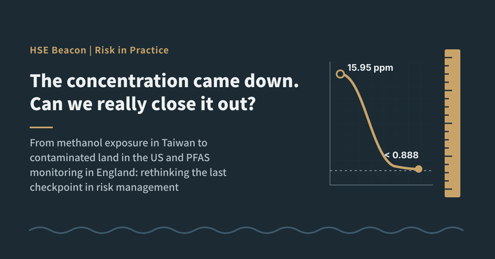

Risk in Practice / Issue 03 essay
The concentration came down. Can we really close it out?
From methanol exposure in Taiwan to contaminated land in the US and PFAS monitoring in England: rethinking the last checkpoint in risk management
Translated from the author's Chinese original. 閱讀中文原文

1. That handsome drop from 15.95 to 0.888
I don't know which corner of HSE you manage, but today we're heading onto the factory floor.
In the meeting room, the engineering team is presenting an improvement project they've just finished.
The job was methanol dip-coating. Solvent vapour escaped during the work, leaving operators exposed to a chemical hazard.
To fix it, the team redesigned the local exhaust ventilation: a rear slot hood combined with partial enclosure, so the escaping methanol vapour is captured close to the source.
They measured again after the change, and the result looks great.
A reduction of more than 94%.
This isn't a made-up scenario. It's one of the good-practice local exhaust ventilation cases published by Taiwan's Occupational Safety and Health Administration (OSHA), and the project also took the top award in its good-practice competition.
For the engineering team, that's well worth celebrating.
It shows that sound engineering design can bring contaminant levels down more directly than simply telling people to wear protective equipment or running more awareness campaigns.
But suppose this report now lands on your desk, waiting for your signature to close it out.
Would you just sign?
It's not a contract for your soul, and nobody's asking you to sign up for the army. But before you sign, we can ask a few questions.
- "Under what working conditions was this figure measured?"
- "Were the sampling position, workload and sampling method the same before and after?"
- "What about exposure on other shifts, at other workstations, or during cleaning and maintenance?"
- "Will the system still perform the same after three months, or six?"
None of these questions are meant to dismiss the engineering team's work.
Quite the opposite. Precisely because this improvement deserves credit, we should be clear about what these numbers actually prove, and which questions they haven't answered yet.
The figures in the published case are enough to show that the exhaust upgrade achieved a significant result. But without full sampling conditions, an exposure assessment and follow-up maintenance data, we can't stretch that into a claim that exposure risk is fully controlled for every operator under every working condition.
And we certainly can't declare chemical exposure management finished just because one number went down.
It reminds me of a question HSE management often overlooks.
Are we accepting a piece of engineering work, or confirming that a risk is under effective control?
The two look alike. In practice, they are very different things.
2. Why are we always in such a hurry to close things out?
In offshore wind operations and maintenance (O&M) and contractor management, I deal constantly with risk assessments, equipment improvements, audit findings, and corrective and preventive actions after incidents.
Over the years I've noticed a very natural tendency in organisations.
We like getting things done.
The equipment's installed: close it.
The procedure's updated: close it.
The training's delivered: close it.
The improvement photos are taken and the sign-offs are complete, so we get ready to switch the tracker from "Open" to "Closed".
That's easy to understand.
For project managers, open items mean a to-do list, resource demands and ongoing pressure.
For contractors, they may also tie into acceptance, payment, schedule and performance.
And for HSE people, the CAPA closure rate in the management report is often a number the boss watches.
So, without quite noticing, we start chasing one thing:
Making the problem disappear from the list.
But a problem disappearing from the list doesn't mean the risk has disappeared with it.
Picture an equipment safety improvement.
The contractor has installed the guarding and submitted construction photos, test records and an updated risk assessment.
From an engineering handover point of view, the job may well be done.
But if we haven't yet confirmed how the equipment behaves in abnormal conditions, how maintenance staff will intervene, and whether the safety functions hold under different operating conditions, then "equipment installed" should not automatically mean "risk fully controlled".
This is exactly where management systems most easily get it wrong.
We take a partial improvement as evidence that the whole problem is solved.
And when every report says "Complete", fewer people are willing to keep asking:
"What hasn't been verified yet?"
Mature management doesn't forbid closing things out.
It insists on being clear first:
Exactly which scope, which stage and which responsibility are we about to close?
3. The soil meets the target. Why not pop the champagne?
On 12 November 2026, the US Environmental Protection Agency (EPA) announced a remediation result worth paying attention to.
The site is in York, Nebraska.
There, a site contaminated with tetrachloroethene (PCE) has long had problems with both soil and groundwater contamination.
PCE was once widely used in dry cleaning and other industrial uses. Handled poorly, it can seep into soil and groundwater and become a persistent environmental risk.
To speed things up, EPA used in-situ thermal remediation.
Put simply, heat is driven into the contaminated soil so the contaminants vaporise, and an extraction and treatment system then removes them.
This technology meant cleanup goals for specific soil source areas were met in about two years, for work that conventionally might have taken more than 15.
More importantly, laboratory analysis at different depths and sampling locations confirmed that the soil in the Seventh Street source area (Operable Unit 01, or OU01) has met the set cleanup standards.
That is a real engineering achievement.
But EPA did not declare the whole site fully cleaned up.
Because this site has more than one problem.
It contains at least three separate operable units:
- OU01: the Seventh Street soil source area.
- OU02: the Fifth Street soil source area.
- OU03: the site's contaminated groundwater plume.
OU02 met its soil cleanup goals in 2025. OU01 was confirmed in 2026, with equipment removal and site restoration still to come.
As for the groundwater plume, that's the problem the next phase has to keep working on.
There's a management idea here well worth learning.
Soil meeting its cleanup target is a result that can be confirmed. It doesn't mean the groundwater contamination is solved too.
EPA didn't cross off the other problems still needing work just because one unit succeeded.
That's not about making sure a project can never be closed.
It's about being clear on the completion conditions for each scope of work.
For managers, it's an important reminder:
Closing a phase is not closing the whole case.
A big problem can be broken into separate scopes of work, each with its own acceptance criteria, completion date and owner.
What has been achieved deserves credit.
But unfinished work must also be clearly kept on record and formally handed over to the next stage of management.
The real danger isn't that a project still has open items.
It's that we know a problem still exists, yet because one result looks good, we let the whole case vanish from the management system.
4. Levels have fallen over ten years. Why won't England call the problem solved?
Another case worth thinking about comes from the Environment Agency in England.
In November 2026, the Environment Agency published its latest PFAS environmental monitoring report.
PFAS are a large class of synthetic chemicals. Because some of them barely break down in the environment, they're often called "forever chemicals".
They can turn up in industrial processes, consumer products and many parts of the environment.
After years of monitoring, the Environment Agency found an encouraging trend.
Between 2016 and 2025, in the relevant river monitoring data:
- PFOS levels fell by around 30%.
- PFOA levels fell by around 29%.
That means past restrictions on some PFAS, changes in how they're used and related controls have produced environmental improvements you can actually observe.
But the Environment Agency did not declare the PFAS problem solved.
Why not?
Because PFAS aren't just PFOS and PFOA.
They're a huge family of chemicals.
Even as some of the earlier-regulated PFAS fall, others may still be present in rivers, groundwater, lakes, coastal waters, and in living things such as fish.
Worse, as analytical methods improve, the range of substances and concentrations we can detect may differ from ten years ago.
So long-term monitoring can't just line up figures from different years and compare them directly.
We also have to ask:
- Have the sampling locations changed?
- Have the test methods been updated?
- Are the detection limits different?
- Are more chemicals now being monitored?
If these conditions aren't properly recorded and analysed, a trend that looks handsome can easily be misread.
Of course, that doesn't make the Environment Agency's downward trend unreliable. On the contrary, it used long-term data and statistical analysis to support the conclusion that some PFAS levels really have fallen.
But the evidence has equally clear limits:
Lower levels of some substances do not mean the environmental risk from all PFAS has gone.
For risk managers, there's another idea worth remembering here.
Improvement results need not only a clear acceptance scope but also the right timescale.
A month of data may be enough to confirm the initial effect of an equipment adjustment.
But judging long-term pollution, chronic exposure or environmental change may take years of monitoring, or longer.
Some questions can be settled by a single acceptance check. Others only build confidence through continued tracking.
We can't demand that every risk gets its final answer at the same moment just because we want the project finished.
5. The real closure standard: define what "done" means first
Put the Taiwan methanol upgrade, the US soil cleanup and the English PFAS monitoring side by side, and I think they remind us of one thing together:
Closing something out is not an administrative act. It's a management judgement that needs evidence behind it.
It also made me rethink what we actually mean when we mark something "Closed" in contractor management, equipment improvement or incident investigation.
So I suggest breaking closure into three steps.
Step 1: Define the scope. What exactly are we trying to solve?
Before improvement work starts, the acceptance boundary should already be defined.
Take the methanol case. We need to be clear whether the goal is to lower air concentration at one work point, or to make sure the personal exposure of a specific group of workers is effectively controlled.
The two are related, but they aren't the same.
A lower fixed-point concentration in the workplace doesn't necessarily represent each worker's actual exposure over a full shift.
If the goal is controlling people's exposure, we need matching evidence, based on the applicable regulations, exposure assessment methods and real working conditions.
In large remediation projects, we need to separate clearly the different areas, contaminated media and cleanup stages.
Most importantly, we can't quietly widen what the result is supposed to cover at the acceptance stage.
Step 2: Verify the effect. What gives us grounds to believe it works?
Once the work is done, we can't just check that the equipment is installed.
We also need to confirm it meets the control objective set at the start.
That may take measurement, functional testing, field observation, spot checks of the work, or other suitable verification.
And the verification conditions have to be representative.
For example, an exhaust system that performs well at low workload won't necessarily capture as well at high workload.
Likewise, a contractor following procedure on a pre-announced audit day doesn't necessarily reflect what happens in everyday work.
So, as far as possible, we should define before the improvement:
- What will we measure?
- Under what conditions?
- What result counts as meeting the requirement?
- If the result falls short, what happens next?
The earlier these questions are settled, the less likely acceptance turns into each side talking past the other.
Step 3: Plan the follow-up. Which risks still need managing?
Even after an improvement passes verification, not every issue can leave the management list for good.
Some controls become less reliable as equipment ages, ways of working change or people move on.
Some environmental risks need long-term monitoring before we can tell whether the improvement lasts.
So at closure, we should state clearly:
- Which goals have been met?
- Which items still need verifying?
- Who owns the follow-up?
- When is the next check?
- What would trigger a fresh assessment?
This approach doesn't keep every improvement ticket open forever.
It lets finished work close against clear criteria, while making sure unresolved risk is formally carried into the next stage of management.
A good closure system doesn't stop anything from being closed. It stops unfinished responsibilities from disappearing along with the closure.
6. Separate "done" from "effective", and the work gets clearer
These ideas can be used directly in our everyday work.
Say you're tracking a contractor's improvement action.
The contractor has modified the equipment, updated the procedure and submitted the records.
You can mark it as:
- Stage 1Implemented
- Stage 2Verified Effective
Stage 1 means the contractor has completed the agreed improvement work, even if that's only a new checklist or a training session, or just a reminder at a toolbox talk.
But if the safety function still needs confirming in real work, or we need to see whether the improvement keeps working, a second status should stay open: Stage 2, Verified Effective.
The two stages don't have to be completed together.
Nor does every simple, low-risk improvement need a long follow-up period.
What matters is deciding, according to the level of risk, what evidence is needed and when it's reasonable to declare the improvement effective.
For example:
- An improved equipment safety interlock can have its key functions confirmed through a suitable functional test.
- An improvement that depends on contractor behaviour may need follow-up spot checks to confirm the new way of working has really been adopted.
- A chemical exposure improvement may need, beyond the initial concentration measurement, periodic inspection, maintenance and re-testing where necessary.
When we clearly separate "work done" from "result effective", expectations between managers and the people doing the work become clearer too.
The boss doesn't need to keep asking, "Are you sure it's really improved?"
And the contractor doesn't discover at acceptance that the client was expecting another set of evidence nobody ever mentioned.
Because both sides know from the start what counts as done, and what counts as effective.
That's what a good management system should deliver.
Not more forms, but fewer misunderstandings about what "done" means.
7. In everyday life, we're often too quick to declare success too
Lately, while helping my child build daily habits, I've noticed a similar tendency in myself.
When my child brushes their teeth without being asked and goes to bed on time a few days in a row, I'm quick to feel relieved, even to think the new habit has finally stuck.
But a few days later, tiredness, a mood or a change in routine might bring the resistance back.
The old me might have thought:
"That's odd. They were doing so well a few days ago. Why the step backwards?"
Now I try to look at it differently.
My child going along with brushing meant that, for those few days, we'd found a smoother way of doing things together.
That's progress worth recognising.
But it doesn't mean my child can now do it independently in every situation.
Building a habit takes time, a supportive environment and repeated practice.
Of course, a child isn't an engineering project, and we shouldn't be measuring every moment of parenting with an audit checklist.
It's just that the experience helped me see:
One success doesn't mean every problem is solved. One setback doesn't mean all the earlier effort was wasted.
We can recognise progress at each stage while accepting there's still more to support and adjust.
That's actually a healthier way of thinking about "done".
No need to dismiss what we've achieved just because the final goal isn't reached yet.
And no need to rush to declare that we'll never meet the problem again just because we've had a result.
8. Real professionalism is knowing when you can close something out
Back to that handsome number from the start.
15.95 ppm, down to below 0.888 ppm.
That's an engineering improvement worth recognising.
To dismiss it just because other issues still need tracking wouldn't be fair.
But to treat it as proof that all exposure risk has gone would be just as irresponsible.
The same goes for the soil cleanup in York.
Cleanup goals for both source areas have been met, and that deserves credit. The groundwater still needs remediation, and that has to be stated clearly too.
England's long-term PFAS monitoring reminds us likewise: lower levels of some substances are real progress, but not proof that the overall environmental risk has gone.
None of these three cases is telling us that nothing can ever be closed.
Quite the reverse.
They remind us that a truly professional manager should be able to judge clearly:
- What is done and can be closed.
- What has improved but still needs tracking.
- What doesn't yet have enough evidence, so success can't be declared too early.
The value of management isn't in turning every tracker green, nor in keeping every case open forever.
It's in making sure every closure has a clear scope, enough evidence and properly arranged follow-up responsibilities.
When the boss asks, "Can we close this one?"
We don't have to answer only "yes" or "no".
A more useful answer is:
"This phase of the improvement is complete, and we have evidence that meets the acceptance criteria. For other working conditions and long-term effectiveness, we've defined the follow-up scope, the owner and the date of the next verification."
That's not passing the buck.
That's closing out responsibly.
A falling concentration isn't the finish line. It's a ruler that helps us see the next layer of the problem.
In the complicated real world, the highest form of responsibility has never been rushing to announce "all clear".
It's drawing the boundaries with a clear head, and facing the unknown honestly.
So that every phase we close becomes a firmer starting point for the next.
Case sources and further reading
Taiwan | Local exhaust upgrade for methanol dip-coating
Good-practice local exhaust ventilation design case published by Taiwan OSHA, 2026.11.03. Sources in Chinese.Official source
- Taiwan OSHA | Good-practice local exhaust ventilation design cases ↗
- Taiwan OSHA | Industrial ventilation: design, performance testing and maintenance of local exhaust ↗
US | PCE Southeast Contamination Superfund site, York
EPA Region 7 news release, 2026.11.12.Official source
England | Long-term PFAS environmental monitoring
Environment Agency assessment report and press release, 2026.11.12.Official source
- Environment Agency | PFAS sources, pathways and environmental data (2026) ↗
- Environment Agency press release | River PFOS and PFOA down around 30% and 29% ↗
On this site
- Issue 03 | Summaries and evidence status for the three cases
- The turbine foundation survived its first winter. Why go back and measure?
Editor's note: This essay builds on publicly available case information and the author's HSE management experience. "Stage 1 / Stage 2" and the three-step closure framework are the essay's own analytical framing, not terms used by the agencies above.